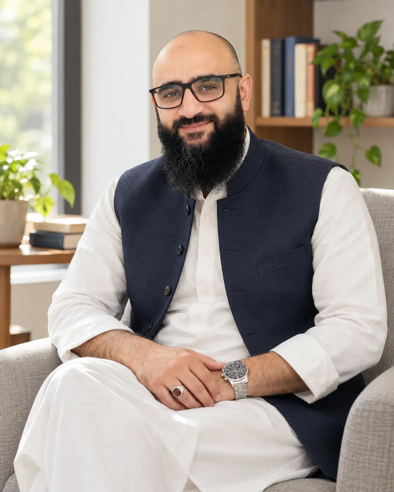
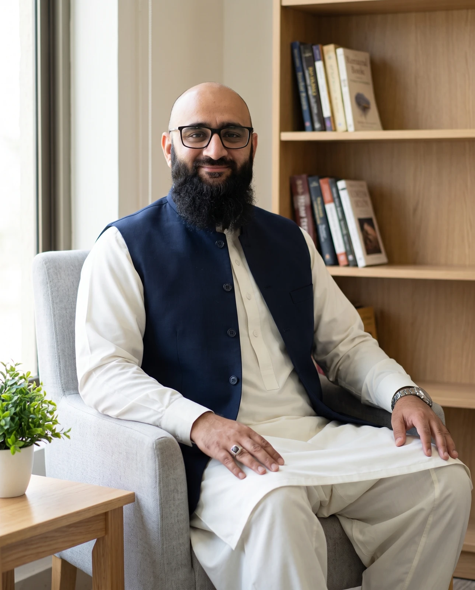
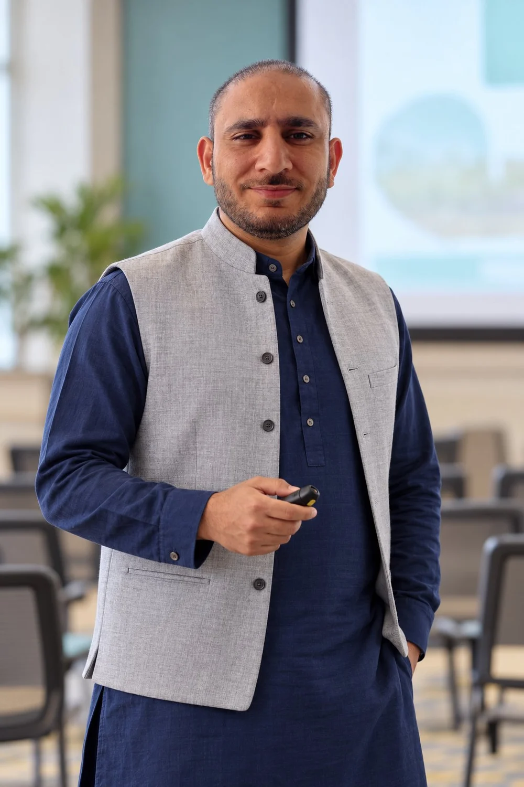
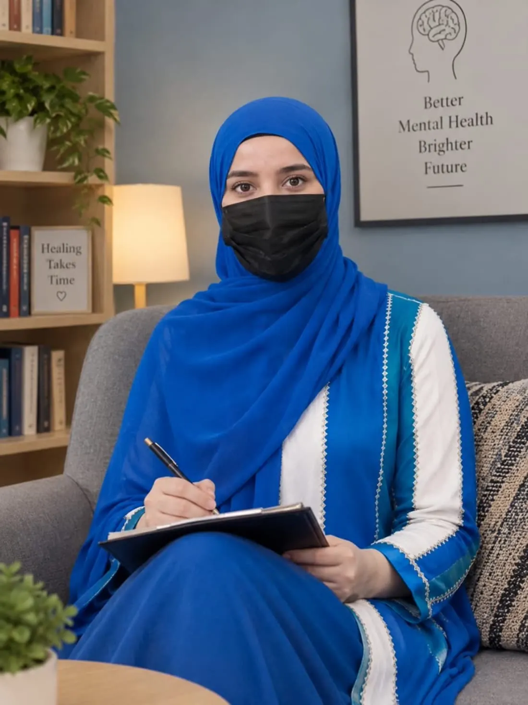
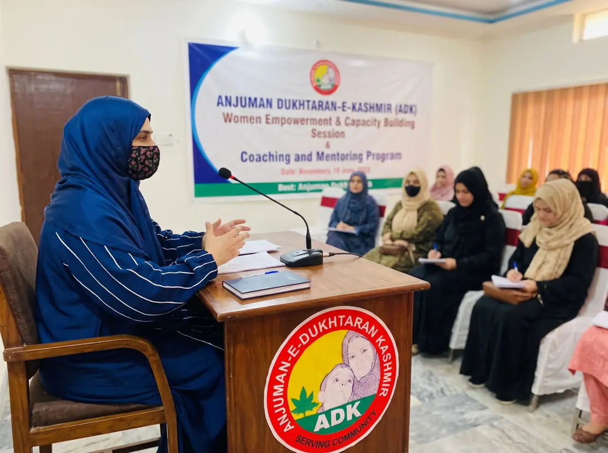
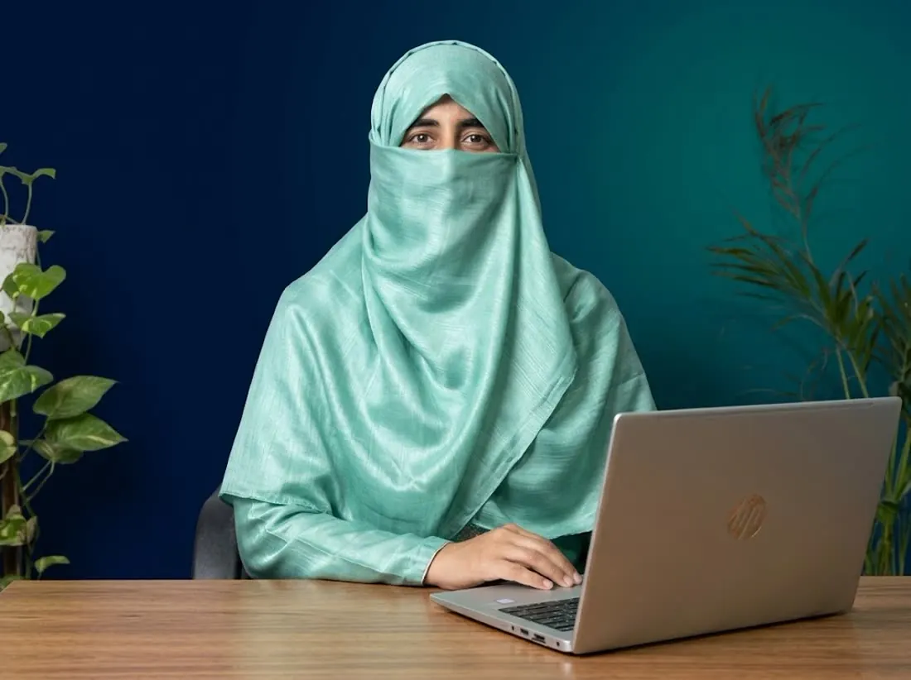
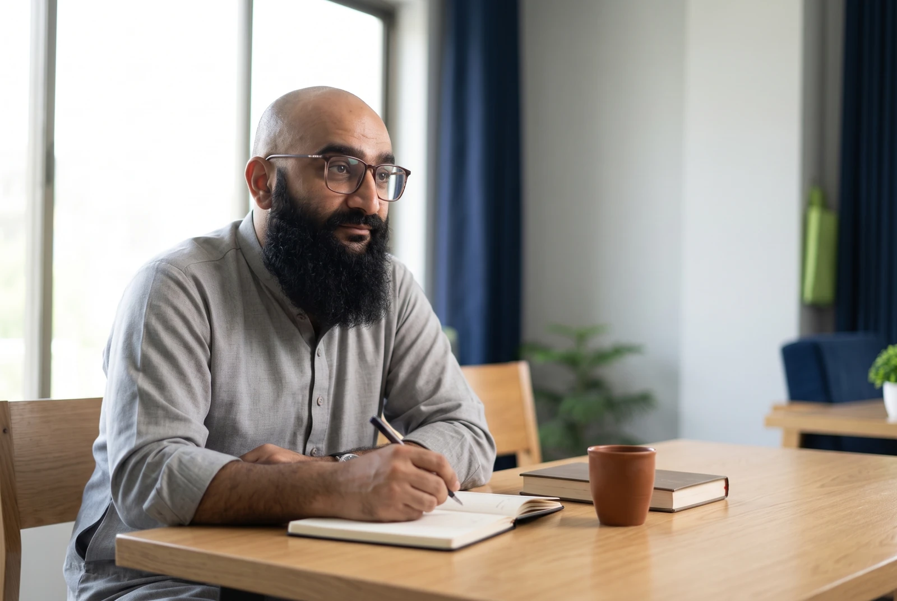
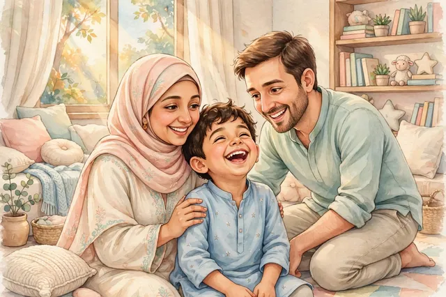

البرنامج الرئيسي · 8 أسابيع
Prophetic Leadership Development Program
البدايةسيتم الإعلان عن المواعيد قريبًا
الطريقةعبر الإنترنت + عمل ميداني
المدة8 أسابيع · ساعتان أسبوعيًا
احجز مقعدًاAIDEFrom Awareness to Excellence
من بهمبر، آزاد كشمير — وعبر الإنترنت، في كل مكان.
قائد أفضل. فريق أكثر ثباتًا. بيت أكثر هدوءًا. شاب يعرف إلى أين يتجه. كل هذه تبدأ من الوعي، ومن هناك يبدأ عملنا. أنا عمران أسلم، مدرّب حياة ومدرّب. عبر AIDE أعمل مع الأفراد والأسر والمهنيين والمؤسسات ممن يريدون الانتقال من حيث هم إلى حيث يريدون أن يكونوا.
خمس عشرة دقيقة على واتساب. قل باختصار ما تريد العمل عليه.
معًا نطابقك مع البرنامج المناسب أو الممارس المناسب.
اتفاق واضح مكتوب أولًا — ثم يبدأ العمل.
لا باب خاطئ. كل باب يقود إلى الطريق نفسه — ادخل من حيث أنت.
أيّ هذه العبارات تصفك؟
غير متأكد؟ جرّب الفحص الذاتي في الأسفل، يستغرق ستين ثانية.

على مر السنين جلست إلى طاولة قادة أعمال، ومشيت مع فرق في أرضيات المصانع والمبيعات، ودرّبت معلمين في فصولهم، وأصغيت إلى آباء وشباب يبحثون عن طريقهم. تلك المحادثات شكّلت AIDE، وما تزال تشكّل كل جلسة أديرها.
أحمل عشرين عامًا من قيادة الشركات والمبيعات، منها خمسة عشر عامًا من العمل الدولي عبر الخليج وأوروبا وأفريقيا، وسجلًا يتجاوز 300 ورشة عمل و700 ساعة توجيه. أنا مدرّب ومرشد أعمل في المجالين المعرفي والسلوكي، وممارس متقدم في البرمجة اللغوية العصبية، ومدرّب مدرَّب على التنويم الإيحائي. تُعقد الجلسات بالأردية أو الإنجليزية أو العربية.
كل شخص وكل مؤسسة يبدأ من مكان مختلف. أحدهم يحتاج أن يقود بشكل أفضل. وآخر يحتاج عادات تصمد، أو بيتًا يتنفس بسهولة أكبر، أو طفلًا يحتاج توجيهًا. هذه البرامج مبنية على مواقف حقيقية وعلى ممارسة تحويل الفهم الجديد إلى عمل.
كيف تبدو القيادة حين يهمّ الخلق بقدر ما تهمّ الأداءات؟ بُني هذا البرنامج الرئيسي على إطار الأسوة المستمد من القرآن (33:21)، ويستكشف الفهم والإخلاص والحكمة والمساءلة. أما علم نفس القيادة الحديث فهو موجود ليشرح، لا ليحلّ محلّ شيء.
ثمانية أسابيع · بالأردية · جلسات مباشرة وعمل ميداني
صفحة البرنامج الكاملة → اسأل عن البرنامج الرئيسي →المبيعات ليست فقط أن تعرف ماذا تقول. إنها قراءة الناس وفهم السلوك وكسب الثقة في محادثات حقيقية. يومان مع فريقك، ثم ثلاثون يومًا من المتابعة في الميدان، بقيادة مشتركة مع عرفان أسلم.
يومان في الموقع · 30 يوم متابعة ميدانية · للشركات→03كل شخص بدأ من جديد في يوم اثنين. الجزء الصعب ليس البدء، بل بناء عادة تصمد في أسبوع عادي. تساعدك هذه المجموعة على بناء عادات تناسب حياتك وتمسكها بهدوء.
أربعة أسابيع · مجموعة عبر الإنترنت · بالأردية→04البيت لا يصبح هادئًا لأن شخصًا واحدًا يفوز بكل جدال. يقوم هذا البرنامج على فلسفة بسيطة: لا ظالم ولا مظلوم، فقط قلبان يتعلمان الإصغاء من جديد. يتعلّم الأزواج والآباء أن يفهموا بعضهم وأن يبنوا بيتًا أكثر ثباتًا.
أربعة أسابيع · عبر الإنترنت · للأزواج والآباء→05التعليم ليس إيصال درس فقط. إنه أيضًا فهم الطفل الجالس أمامك. المعلم الثابت يستطيع أن يثبّت فصلًا كاملًا، وهذا ما يدرّبه هذا البرنامج: الذكاء العاطفي للمعلم، بممارسة أربعة أسابيع في فصول حقيقية.
ورشة يوم واحد · دورة صفية أربعة أسابيع · للمدارس→06بين الطفولة والرشد يواجه الشاب أسئلة قد ترسم اتجاه حياته. يساعده RISE على أن يفكر بوضوح فيمن هو وماذا يريد، وأن يصمّم حياته قبل أن تصمّمها الدنيا له.
ستة أسابيع · أعمار 16 إلى 25 · برنامج AIDE Society الرئيسي→حين تمتلئ مجموعة، تقول البطاقة ذلك — لا مسرح قوائم الانتظار.
البرنامج الرئيسي · 8 أسابيع
مجموعة · 4 أسابيع
الشباب · 6 أسابيع
عمل التطوير الجيد يحتاج أكثر من زوج واحد من العيون. تجمع AIDE ممارسين من الأعمال والتوجيه وعلم النفس والتعليم وخدمة المجتمع. يعمل كل منهم في مجاله، ويقدّمون معًا دعمًا أوسع وأكمل.

أسّس عمران AIDE ليجمع بين الخبرة العملية وعلم النفس البشري بطريقة تبقى متصلة بالحياة الحقيقية. خلف توجيهه عشرون عامًا من القيادة عبر ثلاث قارات، لكن أسلوبه يبقى بسيطًا وشخصيًا: افهم نفسك بوضوح، ثم غيّر ما يهمّ. وإلى جانب AIDE، يعمل المدير التنفيذي الفخري ومدرّبًا ومرشدًا مع ADK، والمؤسس المشارك والمدير التنفيذي الفخري لشبكة إصلاح.

يحمل عرفان أكثر من ثلاثة عشر عامًا في أدوار قيادية لدى شركات رائدة متعددة الجنسيات. يعرف ثقل الأهداف والفرق والقرارات الصعبة، وفي جلساته لا يكون التركيز أبدًا على الهدف وحده — بل على الشخص الذي يحمله.

تجمع ظل هما بين البرمجة اللغوية العصبية وتوجيه الحياة والتنويم الإيحائي والتدريب في ممارسة هادئة واحدة. يصل عملها إلى الطبقات الهادئة حيث تتشكل الأنماط، ويساعد الناس على ترك القديمة والتقدم بقلب أخفّ.

تقود حليمة جمعية بنات كشمير بصفة رئيسة، مواصلةً ثلاثين عامًا من خدمة النساء والأسر. وبصفتها مدرّبة تحمل الجودة نفسها التي عُرفت بها خدمتها: تصغي أولًا، وتتكلم حين تستطيع كلماتها أن تحمل وزنًا.

أسّست عمارة شبكة الإصلاح على إيمان بسيط: حين تُعطى المرأة فرصة، تنهض معها أسرة كاملة. يخلق توجيهها مساحة تستطيع النساء فيها أن يتعلمن ويكسبن ويتعافين، وهي تقود بحنان وحزم معًا.
بعض الأعمال أهم من أن تبقى داخل مؤسسة واحدة. إلى جانب AIDE تقف مبادرتان مستقلتان، لكل منهما قيادتها وتاريخها في الحضور من أجل الناس. ويعمل عمران مع كلتيهما — المدير التنفيذي الفخري ومدرّبًا ومرشدًا مع ADK، والمؤسس المشارك والمدير التنفيذي الفخري مع شبكة إصلاح.
بعض المؤسسات تُبنى حول فكرة. هذه بُنيت حول سنوات من الحضور حين احتاج الناس المساعدة أكثر ما يكون. أسّسها عام 1996 المرحوم الحاج مرزا خرم حيدر، وقد خدمت ADK النساء والأسر المحتاجة عبر كشمير وباكستان لأكثر من ثلاثين عامًا. وفي السنوات العشر الأخيرة وحدها أنجزت مشاريع بقيمة تتجاوز 500 مليون روبية وصلت إلى أكثر من 3,000 أسرة، عبر الزواجات والمؤن والملابس وبناء البيوت ودعم الأعمال الصغيرة. حليمة سعدية تقود ADK بصفة رئيسة. وعمران أسلم مديرها التنفيذي الفخري ومدرّبها ومرشدها.
بدأت الإصلاح عام 2016 بسطر ما يزال يوجّه كل خطوة: استثمروا في الناس، واخلقوا نجاحًا مستدامًا. اليوم تعلّم مدارسها في بهاولغره وكهرور باكا وتكسيلا 350 طالبة. وقد حملت برامجها الدعم الاقتصادي إلى أكثر من 1,000 امرأة والدعم الإرشادي والنفسي إلى أكثر من 1,000 امرأة أخرى، عبر مراكز علاج في بهاولبور وبهمبر وتكسيلا وسيالكوت وعبر الإنترنت، إلى جانب مركز خياطة وتعليم الكبار ومكتب الأطباء. سيدة عمارة زيدي أسست شبكة الإصلاح وتقودها بصفة رئيسة. وعمران أسلم مؤسسها المشارك ومديرها التنفيذي الفخري.
أحيانًا لا تحتاج برنامجًا. تحتاج محادثة تساعدك أن ترى وضعك بوضوح.
ثمة لحظات يصعب فيها أن تتدبر العمل أو الأسرة أو ذهنك وحدك. يمنحك التوجيه مساحة لتقول ما يحدث فعلًا، وتفهم ردود أفعالك، وتغادر بخطوات عملية تالية. في AIDE تستطيع حجز التوجيه والدعم المستنير بالإرشاد والتدريب مع أي من ممارسينا، كلٌّ في مجاله:
الحدّ بصراحة: التوجيه ليس بديلًا عن العلاج الطبي أو النفسي. وحيث تحتاج رعاية سريرية، سيُقال لك ذلك بوضوح وستُوجَّه بالشكل المناسب — هذه الصراحة جزء من الخدمة، لا هامش فيها.
لا يلزمك أن تقرر كل شيء قبل أن تبدأ. ابدأ بمكالمة استكشاف مجانية لخمس عشرة دقيقة على واتساب. أخبرنا بما تبحث عنه، وسنطابقك مع الممارس المناسب والخطوة التالية المناسبة.

دفتر تمارين مجاني
آپ کی زندگی کا کون سا حصہ خاموشی سے توجہ مانگ رہا ہے؟
سبعة أسئلة صادقة، وصفحة تأمل، وخطوة أولى صغيرة تستطيع اتخاذها هذا الأسبوع. بالأردية أو الإنجليزية أو العربية.
أرسلوا لي دفتر التمارين المجاني →ثلاثة أسئلة بروح التقييمات الذاتية الكاملة في AIDE. أجب كما هي الأمور، لا كما ينبغي أن تكون.
هذه نقطة بداية، لا تقييم ولا تشخيص. وضعك الحقيقي ننظر فيه كما ينبغي في مكالمة الاستكشاف المجانية.

بعضها يأتي من محادثة رجل مسنّ عند كشك شاي على الطريق، أو صبر أمٍّ هادئ، أو إدراك يصل في وسط يوم عادي. باسم القلم ماني رايتس، يكتب عمران بالأردية عن الناس والعلاقات واللحظات الصغيرة التي تعلّم أكثر من غيرها. إن كانت الكتابة التي تجعلك تتوقف هي ذوقك، فأهلًا بك أن تقرأ معنا.
يفتح الزر مدونته — الكتابات بالأردية.
عن الزواج، والسنة الأولى، وغضب الطفل — كتب عملية بالأردية، وواحد بالإنجليزية. اقرأ مقدمة الكتب الأربعة الأولى وفصلها الأول مجانًا.
 پہلا سال7 Conversations Before Nikah
پہلا سال7 Conversations Before Nikah
بچے کا غصہ، والدین کا راستہتصفح الكتب →انقر رقمًا. كل سبب وعد يجب الوفاء به — لا شعار.
الأردية والإنجليزية والعربية — التعليم نفسه والعناية نفسها، باللغة التي تفكر بها. لا حاجة أن تترجم نفسك لتُفهم هنا.
سواء أردت أن تقود بشكل أفضل، أو تبني بيتًا أكثر ثباتًا، أو تنمّي فريقك، أو تمنح طفلك اتجاهًا — الخطوة الأولى واحدة. احجز مكالمة الاستكشاف المجانية لخمس عشرة دقيقة على واتساب اليوم.
التوجيه والبرامج
مكالمة استكشاف مجانية لخمس عشرة دقيقة على واتساب — دون أي التزام أو ضغط. أخبرنا أين تقف، وسندلّك على الباب الصحيح.
توجيه فردي ودعم مستنير بالإرشاد — عبر الإنترنت أو في بهمبر.
ستة برامج مميزة — لنفسك أو لفريقك أو لمدرستك.
خاص وسري · دون أي التزام أو ضغط.